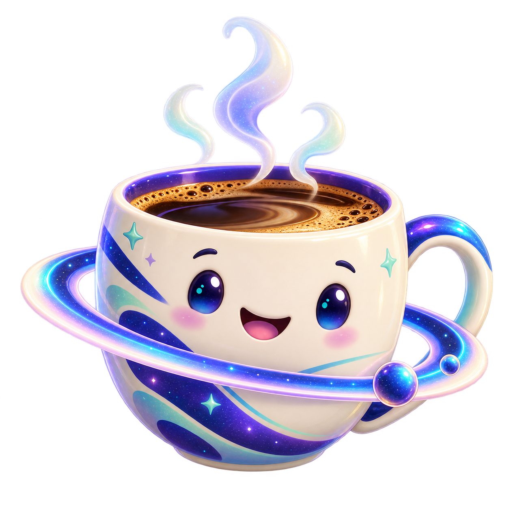

Android
Suas comunidades no bolso.
APK 0.5.5 · Android 7+ · ARM64.
Puxe uma cadeira. A próxima conversa pode virar amizade.
Um espaço acolhedor para jogar, compartilhar e se entender.

Uma boa conversa começaDa mensagem rápida à comunidade que vira casa. Uma experiência que acompanha o seu ritmo.
Prévia interativa da visão do produto.
Veja a disponibilidade real abaixo.
A visão do VoxLink é simples: cada pessoa fala no seu idioma e é compreendida. Com a mesma língua, a voz continua sendo a sua.
Onde estamos nessa jornada ↗O mundo fica menor
quando a gente se entende.
The world feels smaller
when we understand each other.
Demonstração com frases prontas. A tradução de voz real ainda depende da configuração do serviço de IA.
Games, ideias, notícias e encontros. A próxima etapa: transmissões ligadas ao perfil de cada criador.
O VoxLink já tem versões de teste para Android, Windows e navegador. Escolha como quer chegar: baixe no celular, instale no PC ou abra no navegador.
Suas comunidades no bolso.
APK 0.5.5 · Android 7+ · ARM64.
Seu espaço no desktop.
Instalador 0.5.5 · Windows 64 bits.
Abra e encontre sua órbita.
Uma interface para cada tela.
iPhone e iPad fazem parte do planejamento. Ainda não há uma versão disponível na App Store ou Google Play.
Conheça o que existe na beta e o que estamos construindo. A beta usa Supabase para contas e conversas e LiveKit para chamadas. Confira abaixo as limitações atuais.
Convites por código e QR, chats entre amigos, publicações na comunidade e canais separados para texto, voz e avisos. Tela e câmera integradas ao LiveKit.
20 idiomas disponíveis nos perfis; tradução real ainda precisa de um motor configurado. Confirmação de e-mail obrigatória, com envio público pendente. Login Google e troca por NFC entre celulares ainda em preparação.
Lives públicas de perfil, Status, bots e biblioteca de vídeos ainda em desenvolvimento. Comunidades já permitem publicações, reações e comentários.
Permissões de sala e acesso às conversas são verificados no servidor. Segredos de serviços ficam no backend. Microfone e câmera dependem da sua ação.
Antes do lançamento público, a plataforma precisa concluir contas verificadas, bloqueios, denúncias e moderação. A beta ainda não tem criptografia ponta a ponta para o histórico de chats.
Idealização e direção de Isaque Prussak Silveira.
Uma rede para aproximar pessoas, culturas e possibilidades.
Baixe para Android ou Windows, ou abra no navegador. O cadastro e o login ficam dentro do aplicativo.
Não precisa informar e-mail ou senha nesta página. Os downloads são públicos.
Android usa assinatura de teste; Windows ainda não tem assinatura digital de publicador. Tradução própria e criptografia ponta a ponta estão em desenvolvimento.
Apoie o desenvolvimento do VoxLink por Isaque Prussak Silveira com US$ 5. A contribuição é voluntária e não libera VIP ou vantagens nas conversas.
Apoiar com US$ 5 · Kiwify ↗Pagamento na Kiwify. Você pode usar o aplicativo sem contribuir.